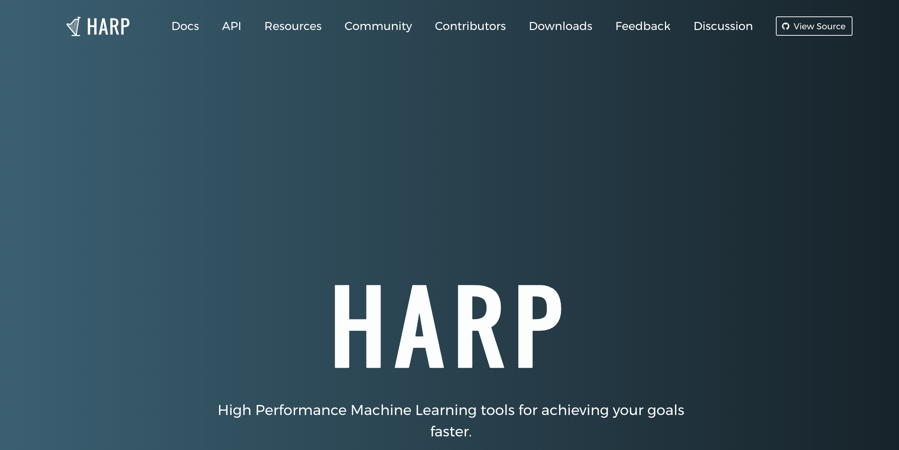
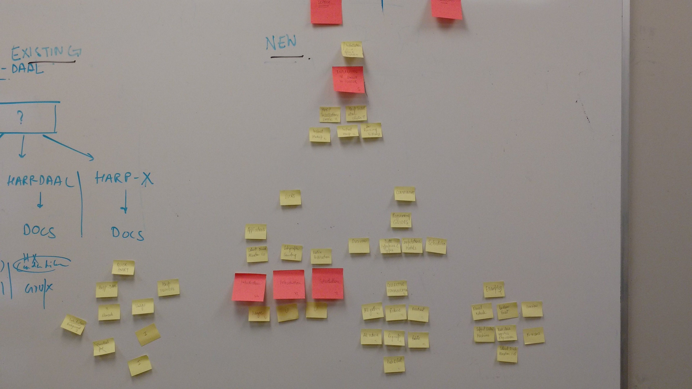
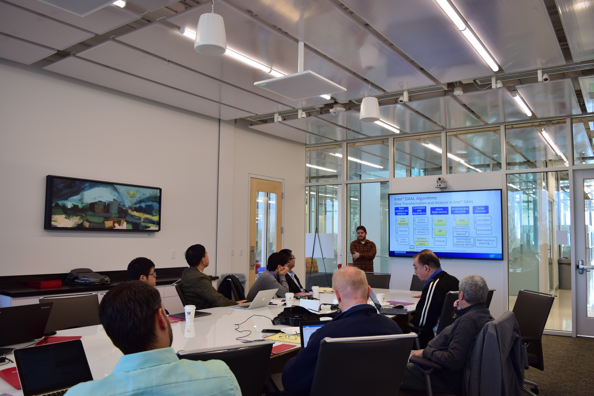
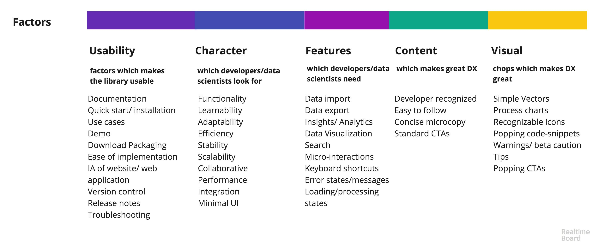
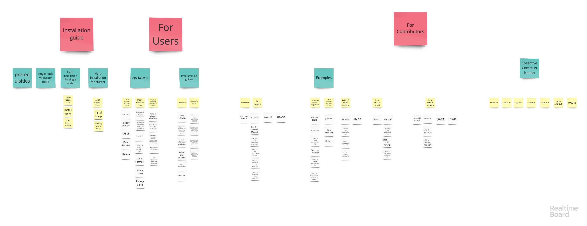
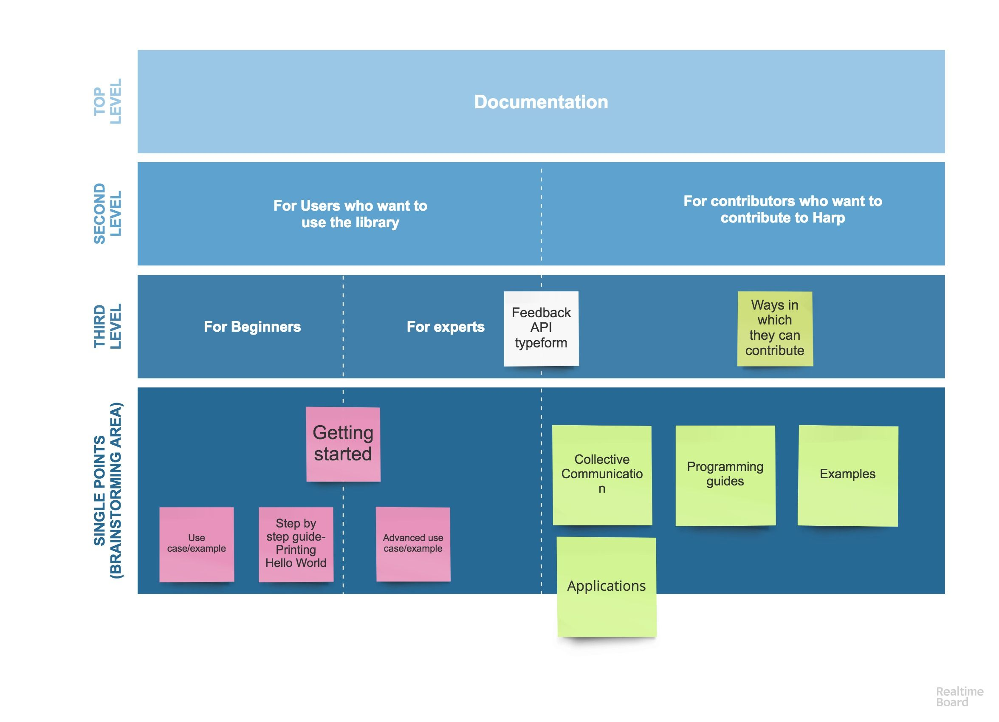
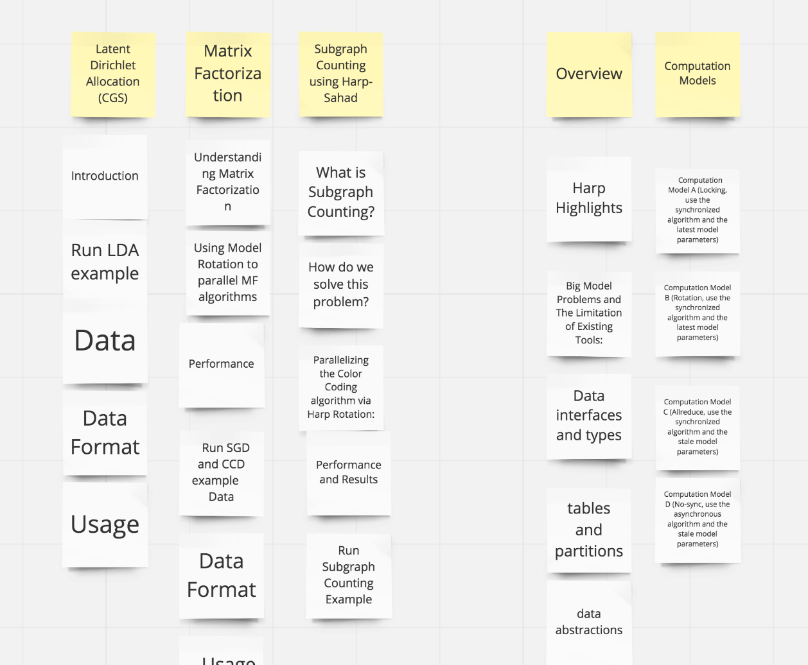
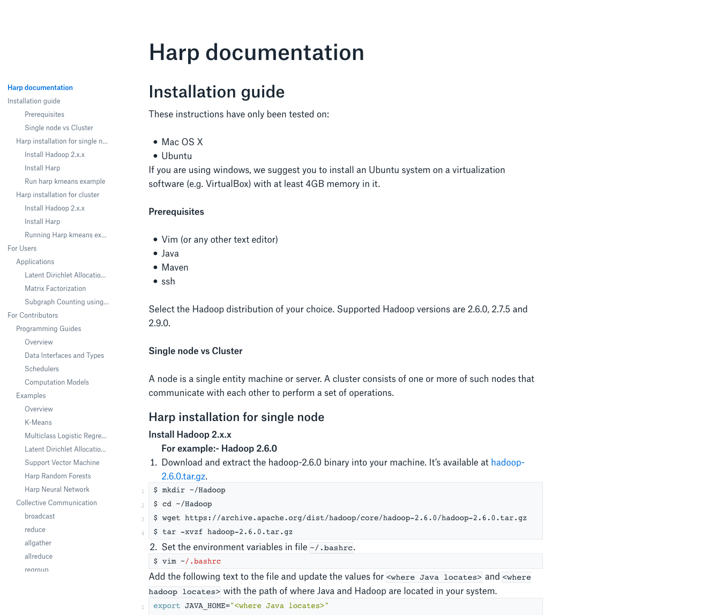
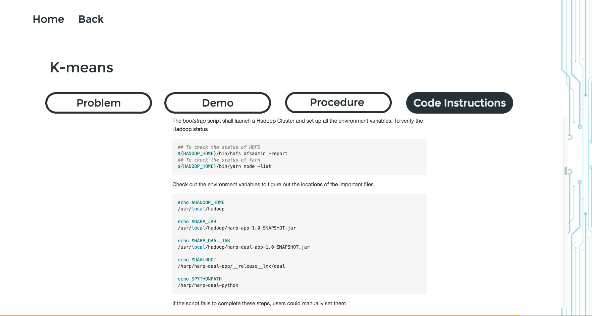
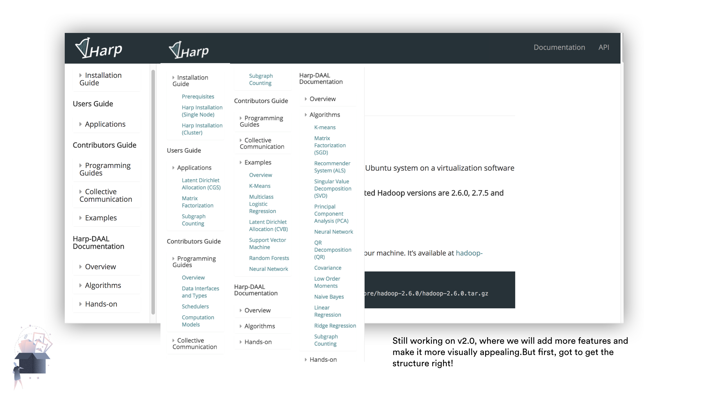

Harp: Re-framing API Docs
Restructuring the documentation for Harp, an open-source library data scientists and researchers use to run machine learning algorithms on large, scalable datasets — installation guides, algorithm diagrams, code snippets, and examples included.
View the live site
I restructured the entire documentation for Harp, an open-source library for data scientists and researchers to run their machine learning algorithms on large, scalable datasets. It involves a lot of complex components — installation guides, graphical vectors, algorithms, large code snippets, and examples — all of which the existing docs buried rather than surfaced.
The goal was simple to state and hard to do: make Harp's library more usable and developer-friendly.
The work started with understanding how data scientists and developers actually work — through co-design sessions, by attending data workshops, and by watching how they used and implemented code day to day.
From there, the focus shifted to documentation UX: restructuring the information architecture, redesigning the vector diagrams that explain each algorithm, and restructuring the code snippets themselves.
The website experience needed work too — search and micro-interactions like a copy-to-clipboard button, packaged downloads, and proper versioning with release notes.
I personally ran a workshop with researchers at IU's Intelligent Systems to work out the documentation's structure and figure out which component needed to go where, alongside user interviews on what data scientists and developers actually care about when using a library.




The workshop findings turned into a clean two-track hierarchy — documentation for users who want to use the library and documentation for contributors who want to contribute to Harp — with getting-started paths, use cases, and contribution guides hanging off each branch.



"Still working on v2.0, where we'll add more features and make it more visually appealing. But first, got to get the structure right."
Each algorithm page was rebuilt around a consistent Problem / Demo / Procedure / Code Instructions structure, so a developer could scan straight to the part they needed instead of reading linearly through prose. The final nav mirrors the restructured IA — nested, scannable, and organized around what a visitor is trying to do rather than how the library's internals happen to be organized.


The revamped tool is now used widely by data scientists across universities. Harp as a project is now funded by Intel, which has meant more resources to keep developing it further.